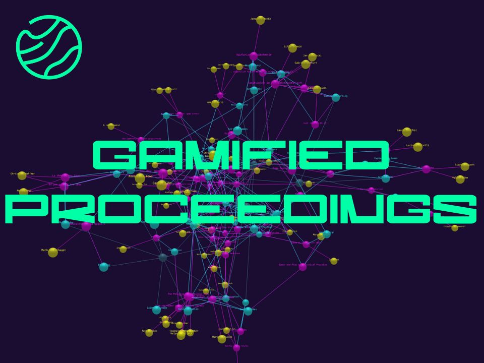
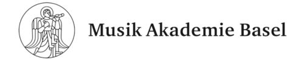

Gamified Proceedings
Experience the intersection of art and play: Dive into a network of performances, music and presentations from the "SPIEL! Games as a Critical Practice" Festival.

Initial Situation
In January 2023, the FHNW Academy of Music in Basel hosted the international festival "SPIEL! Games as Critical Practice". This four-day event featured concerts, lectures, performances, and discussions, critically exploring the creative power of play in addressing societal, technological, and aesthetic questions.
Target Audience
The festival engaged a diverse audience, including students, educators, researchers, and professionals from fields such as music, design, psychology, technology, and education. It was also open to the general public, inviting anyone interested in the intersection of play and critical practice.
Purpose and Objectives
The primary aim of the festival was to investigate the inherent creative power of playfulness and its impact on various domains. By adopting a playful approach, it sought to shed light on critical societal issues and encourage innovative thinking.
Anticipated Outcomes
The festival aimed to achieve several goals:
- Interdisciplinary Collaboration: Foster connections among various disciplines to explore the multifaceted nature of play.
- Educational Enrichment: Provide valuable insights and knowledge to students and professionals, enhancing their understanding of play as a critical practice.
- Public Engagement: Encourage public participation in discussions about the role of play in society, promoting broader cultural awareness.
Despite its success, the festival's rich educational content was initially accessible only to a few attendees. To extend its impact and make these resources available to a broader audience—including participants and the general public, a platform is needed.
Project Goal
The project's goal is to develop a platform that will not only preserve content for future audiences but also provide a valuable resource for researchers, students, and anyone interested in critical perspectives on games as a cultural practice. By establishing a web-based archive, the platform will centralize the festival's content in a single, accessible location. Additionally, the design incorporates an innovative approach to showcase the connections between events through interactive, gamified elements.
Intro Screen
The introduction screen informs visitors about the site’s purpose before they explore the network of content.
Explore
The explore section showcases a 3D node network featuring all topics, events and people from the festival. The user can zoom and navigate through the 3D world as well as jump to any detail page with just one click.
Events
Each event has its own dedicated page, displaying all content as well as the date and time the event was hosted. Additionally, an interactive node cloud showcases connections to directly related topics, events and people.
People
The people overview presents all organizers and performers that took part in the festival. With a simple click, details such as a picture, description, keywords, and an interactive 3D connection panel are displayed for each person.
People
The people and event detail pages both provide a connection cluster which showscases the links to other people, events and topics. It's possible to navigate to those connections directly via the cluster.
Timeline
The timeline presents all events in chronological order, offering an overview of nodes and their interconnections.
Search function
The search function allows for a more direct navigation by searching for events, people or topics.
Developed Solution and its Benefit
criticalgames.ch is a thoughtfully designed web application that presents the proceedings from the festival in an engaging, gamified format. Users can explore a diverse collection of videos, audio recordings, and informative text from many of the festival's performances, including lectures, concerts, and discussions. The platform introduces an innovative navigation system, displaying an interconnected graph of events, speakers, and organizers, which allows users to explore the connections between the festival's various sessions and topics.
This approach offers a unique, interactive way to engage with the festival's content, transforming it from a series of isolated events into a dynamic, interconnected experience. The solution stores all festival content securely on dedicated servers with backups, ensuring long-term preservation and accessibility through a comprehensive web platform. This digital archive includes recorded lectures, workshop materials, panel discussions, and interactive demonstrations that showcase creative approaches to play-based research. The repository serves as a valuable knowledge base where researchers can explore methodologies for integrating games into academic work, students can access expert insights on games as cultural artifacts, and practitioners can discover innovative approaches to critical game analysis and design research.
Functionalities:
- Interactive Event Graph
Navigate through a 3D graph that visualizes the relationships between events, speakers, and participants, helping users understand the interconnectivity of the festival's proceedings. - Dynamic Search Function
Easily locate content by event, speaker, or topic using an intuitive and accessible search bar. - In-Depth Event Exploration
Delve deeper into each event with detailed pages featuring videos, images, descriptions, and interactive elements that highlight their connections to other performances. - Event Timeline
Immerse yourself in the festival experience. The event timeline enables users to experience the festival events as they unfolded. - People Overview
Explore the organizers, performers, and musicians who participated in the festival, all neatly organized in one place for further discovery.
This platform is designed to facilitate a deeper understanding of the "SPIEL! Games as a Critical Practice" festival, promoting exploration, reflection, and research within a gamified and interconnected environment.
Testimonial
"I experienced the collaboration with the team of students and their coach as very dynamic, innovative and mutually beneficial. The almost one-year development period is worthwhile: in close collaboration, new ideas and possibilities also arise for the client - in my case, the project has helped me not only to publish my research data, but also to structure it sustainably. The students already have their own professional experience and the mix of the team brings together different fields of expertise, technology, data management and design, which has led to a well-rounded and refined end product."
Michel Roth
Key terms
- UI/UX ToolFigma
- Programming LanguagesTypeScript, JavaScript
- Frontend StackNext.js (React-based framework) with React Three Fiber and Three.js for 3D rendering, Tailwind CSS
- Backend StackSanity CMS with Typescript
- DatabaseSanity CMS
- Deployment PlatformDebian Server, Docker, Docker-Compose
Client

Michel Roth
4052 Basel
Hochschule für Musik Basel
Team
Team (left to right)
Joshua Wyss
Nicolas Ostwald
Tamira Leber
Daniel Barber
Laurin Scheuber
Samuel Lupica
William Cruz
David Lenz
Coach (not pictured)
Gabriela von Wyl